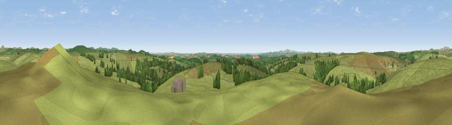

Viewpoint near Cardinham
#8492 in England · top 19% of its area beats it · near Cardinham · open accessWhere it is
The exact computed spot (SX 15512 70775). Click the marker for map links.
Public access: this spot lies on mapped open-access land (CRoW Act 2000) — you may roam here on foot. Computed from Natural England's CRoW access layer and OpenStreetMap rights of way — not the legal definitive map. Always verify locally.
The view, rendered

A 360° render of this exact spot computed from the terrain model, tree cover and land cover — summer colours, afternoon light, calibrated against photographs of famous viewpoints. Real trees, hedges and buildings will differ in detail.
The panorama
Grey silhouette: terrain skyline in each direction (720 bearings, Earth curvature and refraction included). Dashed green: skyline with trees (+15 m) and buildings (+8 m) as obstacles. Blue strip: how far the ground is visible on each bearing.
Where the view opens
Wedge length = distance to the farthest visible ground on that bearing (vegetation-aware). Rings at 10, 25 and 50 km.
What fills the view
87% grassland · 11% woodland · 2% cropland
Angular shares of the visible panorama (visual magnitude), not map area. Landscape diversity 0.20 (0–1 Shannon).
Key numbers
More beautiful places nearby
The staircase of upgrades: each row has a higher view potential than everything closer. Driving times are estimates from straight-line distance, calibrated against real road routing — check an actual route before setting out.
| Place | Direction | Drive | Score |
|---|---|---|---|
| Viewpoint near Cardinham | SW · 2 km | ~6 min | 71.1 |
| Viewpoint near St Neot | ENE · 4 km | ~10 min | 72.3 |
| Berry Down | ESE · 5 km | ~10 min | 73.5 |
| Brown Willy | N · 9 km | ~18 min | 77.3 |
| Caradon Hill | E · 12 km | ~22 min | 78.5 |
| Viewpoint near Port Isaac | NW · 16 km | ~28 min | 79.7 |
| Bin Down | SE · 18 km | ~31 min | 80.2 |
| Viewpoint near Lesnewth | NNW · 20 km | ~33 min | 82.6 |
50.50763, -4.60318 · source: screening · position refined by local search. Computed location — check access rights before visiting.